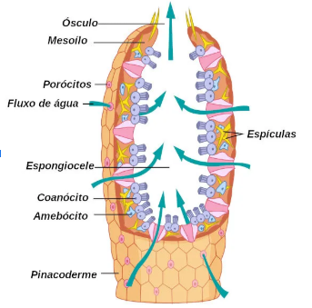
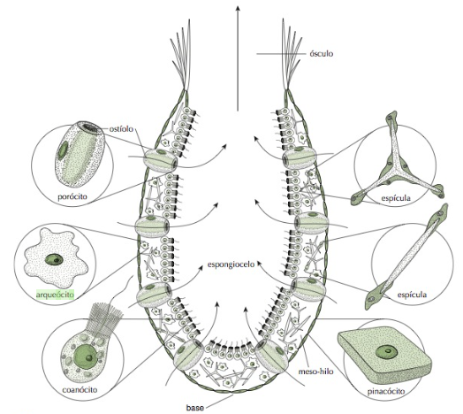
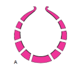
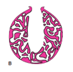
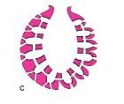
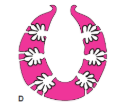
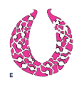
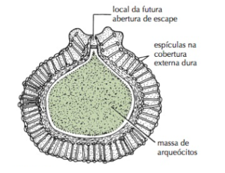
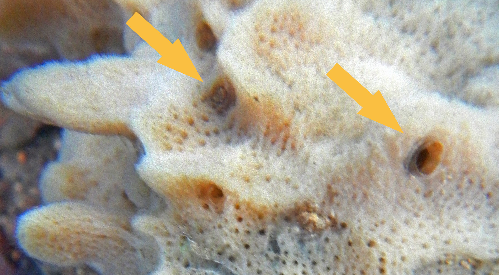

Explore a jornada completa pelas esponjas: da característica diagnóstica às estratégias de reprodução, evolução e importância biotecnológica. Cada página reúne os tópicos essenciais da pesquisa desenvolvida para o trabalho.
Primeiro filo animal a se diversificar nos oceanos, com 600 milhões de anos de história.
+8 mil espécies descritas e estimativa de outras 7 mil aguardando registro científico.
Células totipotentes garantem regeneração e plasticidade sem formar tecidos verdadeiros.

Diagnóstico
Característica diagnóstica dos poríferos
Esponjas apresentam colares de microvilosidades ao redor de flagelos, formando câmaras filtradoras que podem surgir de células isoladas ou de sincícios. Esse arranjo garante fluxo contínuo de água e captura eficiente de partículas.
Cada coanócito lembra os coanoflagelados descritos em estudos celulares clássicos. O batimento do flagelo canaliza a água através de colares densos em microvilosidades, capturando partículas microscópicas enquanto o corpo permanece estático.
Dependendo do estágio de desenvolvimento, as câmaras filtradoras podem ser construídas por células isoladas ou sinciciais. Essa versatilidade explica por que as esponjas reorganizam seus tecidos com tanta facilidade.
Colares:
os anéis de projeções ao redor de cada coanócito ampliam a superfície de captura e mantêm o fluxo sempre orientado para o flagelo central.
Microvilosidades:
essas dobras membranares lembram uma franja microscópica; quanto mais densas, maior a área de contato com partículas alimentares.
Coanócitos:
as células flageladas são o motor da corrente hídrica, conduzem partículas até arqueócitos próximos e realizam fagocitose direta.
Flagelo:
o batimento contínuo gera microturbulências dentro das câmaras filtradoras, impedindo que a água fique estagnada.
Células isoladas:
em espécies simples, cada unidade filtradora surge de um único coanócito especializado que assume a função de toda a câmara.
Sincícios:
nas arquiteturas mais complexas, várias células fundem citoplasmas, formando superfícies multinucleadas que economizam energia durante a filtragem.
Visão geral
Características gerais das esponjas
Mesmo sem tecidos verdadeiros, os poríferos exibem grande plasticidade corporal e adaptação ecológica. A seguir, o resumo dos principais pontos levantados durante o estudo do grupo.
Os poríferos ocupam a base dos metazoários e exibem planos corporais tão peculiares que as comparações com outros animais ficam limitadas. A ausência de tecidos e órgãos diferenciados é compensada por mais de vinte tipos celulares capazes de se reorganizar rapidamente.
Essa plasticidade vem da totipotência de células como arqueócitos e coanócitos, permitindo regeneração, mudanças no formato corporal e crescimento contínuo mesmo após traumas.
Todas as esponjas conhecidas vivem em ambientes aquáticos. Não existem espécies terrestres e apenas cerca de 2% ocupam água doce, onde suportam variações extremas por meio de gemulação.
Ao se fixarem em rochas, corais ou fundos arenosos, permanecem sésseis e dependem do fluxo hídrico que atravessa seus poros para alimentação, troca gasosa e excreção.
A água entra pelos ostíolos, atravessa câmaras flageladas e sai pelo ósculo. Os coanócitos, com seus colares de microvilosidades, lembram os coanoflagelados — protistas apontados como ancestrais do filo.
Amebócitos distribuem nutrientes, coordenam movimentos lentos da parede corporal e podem originar outros tipos celulares quando necessário.
Esponjas atingem até um metro de altura, fornecem abrigo a moluscos, crustáceos, peixes e microrganismos, e exibem colorações variadas resultantes de simbiontes fotossintetizantes.
Estima-se que mais de 8.000 espécies já tenham sido descritas e outras 7.000 aguardem registro científico, refletindo a amplitude desses microhabitats.
Anatomia
Arquitetura corporal e grupos celulares
O corpo das esponjas funciona como um sistema de canais. Diferentes tipos celulares compartilham funções de suporte, filtragem e secreção para manter o fluxo contínuo de água.
Arquitetura corporal
O corpo das esponjas é organizado como um sistema cavernoso. A pinacoderme externa, formada por pinacócitos achatados, protege o organismo enquanto regula difusão de gases e excreção de resíduos diretamente pela membrana.
Logo abaixo está o mesoílo — matriz gelatinosa que funciona como um “tecido conjuntivo primitivo”. Nele circulam fibras proteicas, espículas minerais e células móveis que conectam as demais camadas.
A água penetra por ostíolos sustentados por porócitos, avança por canais revestidos de coanócitos e chega à espongiocele antes de ser expulsa pelo ósculo apical. Toda a filtração, nutrição e respiração acontece nesse trajeto hídrico contínuo.
Redes celulares especializadas
O grupo de epiteliócitos inclui pinacócitos, porócitos e actinócitos. Estes últimos, semelhantes a fibras musculares, modulam a abertura do ósculo e podem provocar “espirros” para eliminar resíduos acumulados.
Coanócitos são as “células de colar” responsáveis por gerar corrente d’água com seus flagelos. Eles transferem partículas capturadas para arqueócitos, células ameboides totipotentes que distribuem nutrientes e originam outros tipos celulares quando necessário.
O mesoílo também abriga mecanócitos, como esclerócitos e espongiócitos, que sintetizam as espículas de sílica ou calcário e as fibras de espongina. Esses elementos de sustentação definem a rigidez corporal e distinguem as classes de poríferos descritas no material.

Arquitetura
Tipos corporais de esponja
A complexidade dos canais internos determina a eficiência de filtração. Os principais planos corporais aparecem resumidos abaixo.
O modelo mais simples lembra um cilindro oco com ósculo único. As paredes finas são revestidas por coanócitos, e a água cruza o corpo praticamente sem desvios, o que limita o diâmetro da esponja.
Por depender de fluxo direto, o áscon existe sobretudo em esponjas calcárias pequenas, onde a curta distância entre poros e espongiocele evita estagnação.
Nesta configuração, o átrio central é revestido por pinacoderme e não por coanócitos. Os poros alimentam canais tubulares que conduzem a água diretamente ao interior.
A organização alongada facilita a ocupação de fendas e espaços estreitos em recifes, mantendo o fluxo constante mesmo em corpos mais delgados.
As paredes são pregueadas em projeções radiais. A água passa primeiro por canais dermais, entra em câmaras cobertas por coanócitos e só então chega ao átrio, já parcialmente filtrada.
Esse arranjo aumenta a superfície disponível para captação de partículas e permite que a esponja cresça sem perder eficiência.
Similar ao sycon, mas com câmaras flageladas ramificadas que se multiplicam como redes internas. As divisões funcionam como filtros em série, aumentando o tempo de contato com a água.
Esse design raro prepara o caminho para a complexidade das esponjas leuconóides ao maximizar o volume de processamento sem expandir o ósculo.
O corpo é formado por uma rede de canais e câmaras vibráteis interconectadas. Vários ósculos podem trabalhar em paralelo, expulsando a água filtrada.
Trata-se do plano mais eficiente: reduz o volume de cada câmara, multiplica o contato com coanócitos e sustenta os maiores tamanhos registrados para poríferos.
A imagem ilustra a evolução da complexidade do sistema de canais, desde o simples modelo Áscon até a rede intrincada do Leucon, que permite maior eficiência de filtração e tamanhos corporais mais avantajados.

ÁsconCorpo tubular com cavidade central ampla; água entra pelos porócitos e sai rapidamente pelo ósculo.

SolenóidePlano intermediário com canal axial revestido por pinacoderme e câmaras laterais reduzidas.

SyconDobras radiais aumentam a superfície filtradora; água percorre câmaras laterais antes de chegar ao átrio.

SileibideCâmaras flageladas ramificadas funcionam como filtros em série, prolongando o tempo de contato com a água.

LeuconRede de canais interligados alimenta múltiplas câmaras flageladas, garantindo alta eficiência de filtração.
Classificação
Classes de Porifera
A composição das espículas e a organização das câmaras flageladas definem os grupos taxonômicos atuais e históricos.
Espículas inteiramente calcárias (CaCO3) sustentam corpos que podem assumir planos áscon, sycon ou leucon. Nesta classe, os coanócitos apresentam maior capacidade totipotente e participam ativamente da regeneração.
Representam cerca de 80% das espécies conhecidas. Possuem espículas silicosas ou fibras de espongina e incluem todas as esponjas de água doce, além de formas carnívoras sem fluxo hídrico convencional.
Conhecidas como esponjas-de-vidro, exibem espículas de sílica com seis raios interconectados e corpo sinicial. A ausência de pinacoderme típica favorece habitats profundos e águas frias.
Um grupo pequeno (menos de 100 espécies) com células epiteliais ciliadas assentadas sobre membrana basal completa. As espículas podem estar ausentes ou serem inteiramente silicosas.
Classe extinta do Cambriano que construiu recifes calcários. Seus corpos em forma de taça apresentam paredes dupla e porosa, sugerindo um estilo filtrador semelhante ao dos poríferos atuais.
Categoria histórica que reúne demospongias leuconoides capazes de secretar maciços de carbonato de cálcio, além de espículas de sílica e espongina. Habitam fendas escuras em recifes e cavernas.
Estratégias de sobrevivência
Dormência e gemulação
Gemas internas permitem que esponjas atravessem períodos críticos, resistindo à dessecação e ao frio extremo.
As gêmulas são envolvidas por uma capa secretada por outras células, formando um invólucro resistente que abriga o conjunto de arqueócitos diferenciáveis.
O organismo adulto pode sofrer regressão parcial, reduzindo-se a uma massa celular protegida enquanto a gêmula amadurece.
As estruturas dormentes toleram congelamento, dessecação e falta de oxigênio. Em espécies de água doce, a vernalização exige meses de frio intenso antes da germinação.
Há registros de gêmulas viáveis por até 25 anos, demonstrando a importância dessa estratégia para recolonizar ambientes sazonais.
Quando a temperatura e a disponibilidade de água se normalizam, o envoltório rompe-se e os arqueócitos retomam divisões, reconstruindo canais e revestimentos celulares.
A nova esponja surge geneticamente idêntica à original, assegurando a continuidade da linhagem mesmo após condições extremas.

O diagrama destaca o invólucro da gêmula e o grupo de arqueócitos totipotentes que garantem o reinício da colônia após o período de dormência.
Reprodução
Modos reprodutivos dos poríferos
As esponjas conciliam mecanismos assexuados e sexuados, com controle fisiológico para evitar autofecundação.
Esponjas multiplicam-se por gemulação, brotamento ou fragmentação. Os corpos de redução preservam núcleos celulares durante períodos críticos, garantindo clones geneticamente idênticos ao organismo original.
A maioria é hermafrodita simultânea, mas a fertilização cruzada prevalece. Pelo menos 25 espécies apresentam autoincompatibilidade, reconhecendo gametas de outros indivíduos e evitando autofecundação.
Espermatozoides vindos da coluna d'água são capturados por coanócitos, que os entregam a arqueócitos totipotentes. Esses, por sua vez, diferenciam-se em oogônias ou espermatogonias conforme necessário.
Muitas espécies liberam larvas flageladas — celoblástulas nas calcárias e demospongias — que nadam livremente até encontrarem substrato. Em alguns casos, a camada flagelada inverte-se antes da fixação definitiva.

A micrografia evidencia o caminho percorrido pelos gametas dentro das câmaras flageladas.
Evolução
Linhagem ancestral e hipóteses evolutivas
O registro fóssil e a comparação com coanoflagelados ajudam a reconstruir a história do grupo.
Os fósseis mais antigos de esponjas remontam a cerca de 500 milhões de anos, no Cambriano. Estruturas de espículas preservadas indicam que o filtramento já estava bem estabelecido naquele período.
A homologia entre os flagelos dos coanócitos e os dos coanoflagelados reforça o parentesco evolutivo. As semelhanças celulares sustentam a hipótese de um ancestral colonial flagelado.
O ganho de eficiência hídrica impulsionou transformações arquitetônicas: quanto mais câmaras flageladas, maior a superfície de contato para absorver alimento e oxigênio.
Pesquisadores debatem se o corpo leuconoide é um estágio derivado que surgiu por complexificação ou se representa o ancestral de linhas que simplificaram seus canais secundariamente.
Importância
Relevância química, medicinal e tecnológica
Compostos derivados das esponjas inspiraram pesquisas farmacológicas e inovações de materiais.
Moléculas como a cribrostatina, isolada de poríferos marinhos, exibem ação antibacteriana, antiviral e antimitótica. Compostos semelhantes abriram caminho para pesquisas contra o câncer e infecções resistentes.
Substâncias secretadas pelas esponjas impedem a fixação de larvas em cascos de navios e estruturas submersas, inspirando revestimentos antifouling menos tóxicos.
As fibras de sílica das esponjas-de-vidro apresentam orientação da luz comparável às fibras ópticas fabricadas pelo ser humano, com resistência notável em ambientes de alta pressão.
Espécies ricas em espongina são cultivadas no Mediterrâneo, Caribe e Oceania para produção de esponjas de banho biodegradáveis, valorizadas pela maciez natural.
Poríferos abrigam moluscos, crustáceos, peixes e microrganismos a poucos milímetros de distância. Algumas demospongias crescem sobre conchas de ermitões ou moluscos vivos, oferecendo proteção em troca de motilidade e limpeza.
Mídia
Vídeos complementares
Explore os mecanismos das esponjas em ação com esta seleção de vídeos, que ilustram desde a circulação de água até comportamentos surpreendentes como o "espirro".
Circulação de água
Veja como o sistema de canais e câmaras flageladas funciona para garantir o fluxo contínuo de água.
Reprodução das esponjas
Entenda os processos sexuados e assexuados que garantem a perpetuação do filo.
Esponjas "espirram"?
Observe o mecanismo de contração que as esponjas usam para expelir resíduos acumulados em seus canais.
Visão geral (em espanhol)
Uma introdução visual à diversidade de formas e cores encontradas no filo Porifera.
Resumo para o ENEM
Uma revisão completa sobre o filo Porifera, focada nos principais pontos para vestibulares e ENEM.
Referências
Fontes utilizadas
Brusca, R. C.; Moore, W.; Shuster, S. M. Invertebrados. 3. ed. Rio de Janeiro: Guanabara Koogan, 2018.
Fransozo, A. Zoologia dos Invertebrados. Rio de Janeiro: Roca, 2016.
Pechenik, J. A. Biologia dos Invertebrados. 7. ed. Porto Alegre: AMGH, 2016.
Urry, L. A. et al.Biologia de Campbell. 12. ed. Porto Alegre: Artmed, 2022.